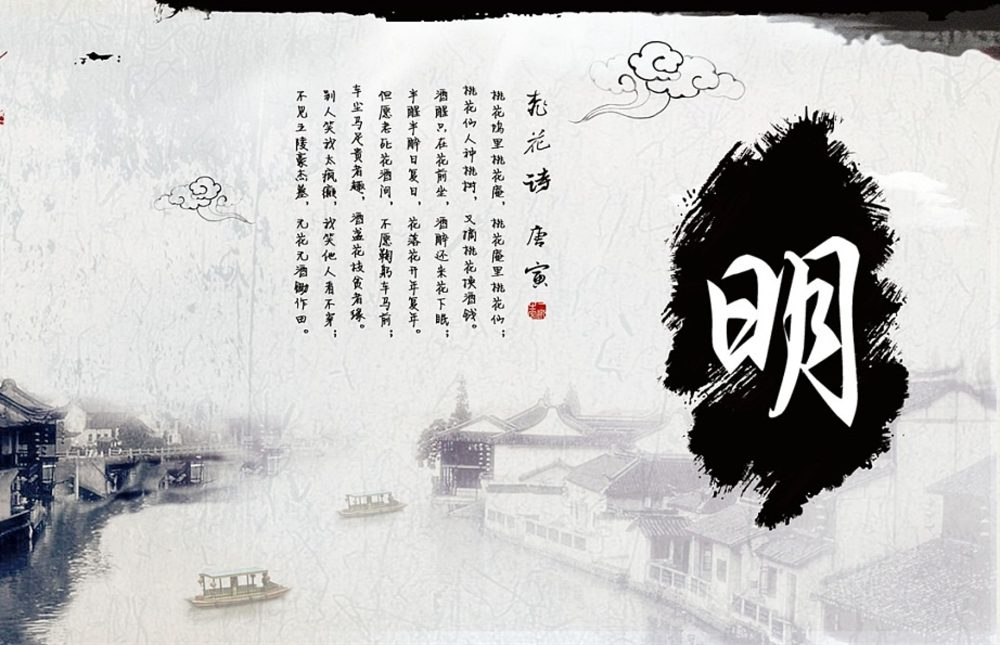
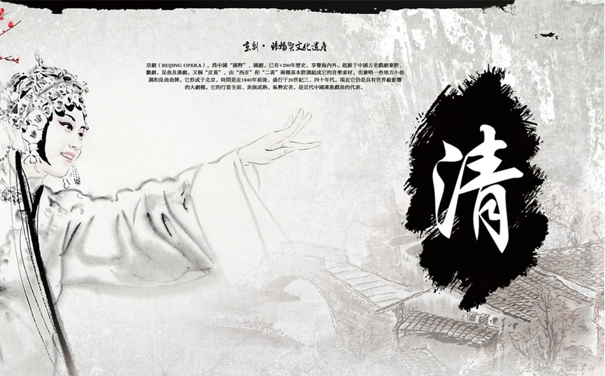
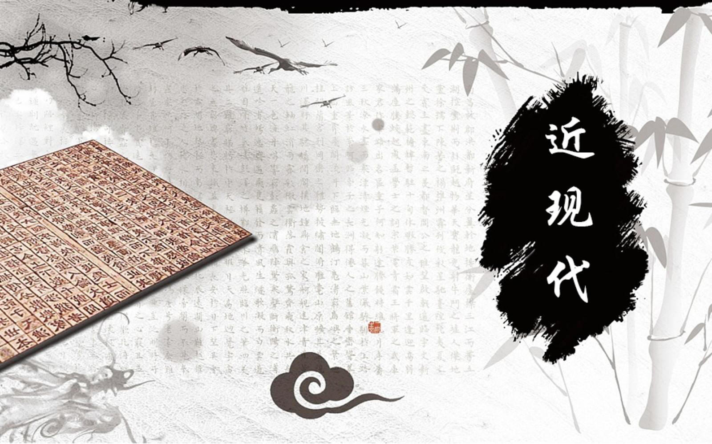
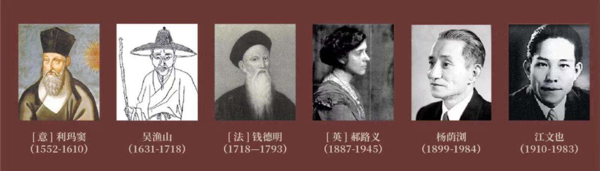

中國聖詩與詩集的發展 Chinese Hymn and Hymnal
專訪音樂界名宿黃永熙博士
李韡玲
神思 第廿九期 一九九六年五月 45-51頁
＊＊＊＊＊＊＊＊＊＊
摘要
李韡玲小姐一文是對基督教音樂名宿黃永熙博士的專訪。黃博士正編撰《普天頌讚2000年》。文章介紹《普天頌讚》是一本搜集了由唐代大秦景教時代到二十世紀基督宗教的聖詩集，取錄的都有濃厚的中國本土氣息，其中多為中國人原創，充滿著時代色彩。研究基督宗教與中國文化的關係，《普天頌讚》提供了寶貴的資料。
＊＊＊＊＊＊＊＊＊
前言
認識黃博士是十多年前的事，那時候我是名女中音李冰老師的學生，遇上老師舉辦的學生演唱會時，黃博士要是有空，就定然是座上聽眾之一。後來我去參加黃博士負責的香港聖樂團，逢星期二晚上八時到尖沙咀的舊YMCA禮堂練歌。在我印象中，每一個團員都喜歡黃博士，他既是指揮又是朋友，但更像一位父親，他沒有那些所謂藝術家的脾氣，他對聖樂團的表現要求非常嚴格，但從不會惡言相向，頤氣指使，瘋瘋顛顛，他讓我們體會到「音樂可以陶冶性情」這句話的真諦
，就如君子，溫潤如玉。
1990年他退休回到紐約去，就住在他母校哥倫比亞大學的靠鄰(他是哥大師範學院的音樂系畢業生)。1994年重臨香江，他說是「奉召」回來，主要任務(一)是籌備《普天頌讚2000年》的出版及編撰，(二)是協助中國基督教協會主持《讚美詩--
新編》中英對照版的出版事項。
《普天頌讚》是什麼
外表看是很簡單的一本基督教會聖詩集，而當中卻包含了一層非凡的意義，最重要的是讓我們看到基督教文化與中國文化的相互影響。《普天頌讚》所收錄的許多首聖詩，是由中國人原創的，尤其是歌詞，從第八世紀大秦景教(被認為是最早傳入中國的基督教團體)到明朝耶穌會神父吳漁山(中國人)到清朝康熙皇帝到今日各譯詞人、寫詞人的作品，都可以在這部厚達一千七百多頁的中英對照版《普天頌讚》中索尋可得。是活脫脫的一個寶藏。是基督教在中國發展史中重要的一章。如果沒有《普天頌讚》，誰會曉得清康熙是個慕道者，不單熟悉教義且
還作詩一首《康熙十架歌》哀悼捨身救世的耶穌呢！原詩詞如下：
功成十架血成溪，
百丈恩流分自西，
身列四衙半夜路，
徒方三背兩番雞。
五千鞭撻寸膚裂，
六尺懸垂二盜齊，
慘動八垓驚九品，
七言一畢萬靈啼。
我們都知道康熙文武兼備，流傳至今的康熙大字典是個好明証；當日他平定吳三桂、耿精忠、尚可喜之亂，又收回台灣，降服西藏，也有歷史記載。
然而對康熙最深刻最有血有肉的印象也許是來自武俠小說�奡y繪的康熙，例如他的心腹韋小寶，他對付異己的手段(康熙有殺人於五步之內的傳說)；卻鮮有人(甚至沒有人)提及康熙在耶穌會神父的導引之下竟然精研基督教義。如果沒有《普天頌讚》的收藏和發揚，康熙的歷史必然少了許多感人的故事和資料，那麼作為對一個偉大人物的研究，就會失諸片面和浮淺。
你也許會問，研究中國文化與基督教聖詩的相互影響和關係，只有基督教的《普天頌讚》有跡可尋嗎？天主教會在中國的歷史也是源遠流長，為什麼不向天主教埋手呢？
這是個好問題。
但答案也不是三言兩語的一回事。
天主教會的禮儀語言一直以拉丁文為主，也沒有禮儀本地化這回事。從到中國傳教的第一天開始直至1964年梵蒂岡第二次大公會議之後，禮儀中所用的經文和詩歌，都是拉丁文，不管你明白也好一頭霧水也好，教規就是這樣，沒有人敢動它分毫。
六十年代，整個天主教會都知道，如果繼續去墨守那些幾近千年的成規，教會將要迅速老化，不合時宜，與信徒間的關係將會出現無可挽救的鴻溝。於是就由當時的教宗若望二十三世召開了震撼全球的，一個劃時代的梵二會議，訓令教會走本地化路線，從
禮儀到日常的祈禱到聖詩的誦唱，全用當地文字，並切合當地的文化和傳統。
即是說1964年梵二之後，中國(香港)天主教會才積極搜集流落民間的許多原創聖詩，也積極鼓勵創作本地化的宗教音樂。梵二後發崛出來的中國聖樂家江文也的眾多譜以中國色彩音樂的聖詩如《聖母經》等就是一個最好的例子。我當時在天主教學校唸中學，江文也的聖歌也唱了不少，印象最
深刻的是《聖母經》，因為跟外國作曲家如舒伯特的《Ave Maria》的味道是截然兩回事。江文也的幽怨得多了。
《普天頌讚》的過去與未來
《普天頌讚》於1936年編撰完畢，並於同年在上海出版，這是最早的版本。
這本聖詩集的編撰，絕不是一朝兩日的事，而動員的人力物力，資料搜集，更非局外人可以想像。搜集的聖詩，從大秦景教時代開始至1936年止，內容有歌曲歌詞皆為原創的，有歌詞是從外文聖詩翻成中文的，有歌詞是原創但曲調是採用本國或外地曲調的；全是中文。
為了有效地完成這項工程，於是由中國六個基督教宗派分別委派代表組成了一個聯合聖歌編輯委員會來負責，這六個宗派是：中華基督教會(Church
of Christ in China)、中華聖公會(Chung Hwa Sheng Kung Hwei)、美以美會(Methodist Episcopal
Church North)、華北公理會(North China Kung Li Hui)、華東浸禮會(East China Baptist
Convention)、監理會(Methodist Episcopal Church South)。
經過了七年的籌備、搜集、篩選、鑑証、編撰，終於1936年面世，由廣學會出版，初版共印行十多萬本。
目前正在各基督教禮拜堂及學校使用的《普天頌讚》是七十年代重新修訂的版本，「自從中國教會的重心由中國大陸遷移至海外，文化和社會背景都有改變。普天頌讚出版後的數十年當中，科技的發達，以致人類所面對的人口、能源、環境、種族等種種問
題，不是以前所想到的。在西方的教會�堙A一本重要的聖詩集，經過二三十年後，必需修訂，取銷那些不能通過時間考驗的詩歌，增添在這時期內所產生的新詩新調。否則這詩集會漸漸被淘汰，而由其他新編的詩集所取代。」--序言部份，《普天頌讚》1977年11月版。
六十年代末，基督教文藝出版社持上述理由，開始籌劃修訂《普天頌讚》，並獲得基督教各宗派的熱烈支持，派出代表參與盛事，當中成員就包括了黃永熙博士和韋瀚章教授。
正式的編撰工作於1971年3月12日展開，至1977年12月，新修訂的《普天頌讚》正式付梓面世。
今日，《普天頌讚》又在「大興土木」廣集各方賢能與專家，舉行第二次的修訂，籌編《普天頌讚2000年》。
《普天頌讚》洋溢的中國氣息
(1) 調寄民間歌謠
這些聖詩都是先有曲，然後依曲填詞。而曲調則多採用各地地方歌謠，如被稱為很能反映現代社會情況的《全地屬主歌》(翻譯)，其曲調就是採用一首湖南民歌；《靈修歌》則是調寄《江上船歌》；《上主小孩歌》調寄中國民謠；《真神造天地》調寄台灣民謠。
事實上，有許多民歌，由於年代湮遠或者戰亂連年，早已在尋常百姓家中散佚凋零，無可稽考。《普天頌讚》在這方面的搜集和記載，實在是一項貢獻，例如古琴曲譜「極樂吟」，要不是用來配以《真美歌》，也許早就零落隨草莽。
(2) 遣字用辭充滿時代色彩
1625年，一座在唐朝建立的石碑(公元781年)在西安附近出土，碑文很長，頂上有一石刻十字，並寫疞：大秦景教流行中國碑。碑文開始以佛教及道教的術語，陳述基督教教義大綱，然後追述該教在中國傳播經過主要階段。
景教意思是教義光輝正大當受人景仰的意思。大秦乃為當時波斯或巴力斯坦的稱號。唐史記載636年(貞觀中)，大秦阿羅本帶聖經來長安，太宗覺其教義正直合理，予以尊崇。
是以景教可說是基督教傳入中國的先頭部隊。《普天頌讚》內就收錄了景教中人當時以漢字寫的一首名為《大秦景教三威蒙度讚》的聖詩，節錄如下：
--
無上諸天深敬歎，大地重念普安和，人元真性蒙依止，三才慈父阿羅訶。
--
我今一切念慈恩，歎彼妙樂照此國；彌施訶普尊大聖子，廣度苦界救無億。
--
難尋無及正真常，慈父明子淨風王，於諸帝中為帝師，於諸世尊為法皇。
全首聖詩共十一節，從以上三節看，你明白當中的意思嗎？
《普天頌讚》附錄中謂：「中國最早的一首聖詩《大秦景教三威蒙度讚》是法國漢學家Paul Pelliot
於1908年從甘肅的敦煌石室中發掘出來的。可能是在第八世紀從西方古代聖詩《榮歸主頌》節譯過來的聖詩之一。當時所譯的名詞當然與現代基督教的名詞不同，例如稱耶和華(Awe)為阿羅訶，彌賽亞為彌施訶，聖靈(Holy
Spirit)為淨風王等。」
不管此詩是創作還是翻譯，單欣賞其遣辭用字，尤其作者用了七言絕句，就充滿時代色彩，這些古典中文(Old
Chinese)，在今日看來，真是既遙遠又陌生，而且對今日一般中國人來說，可算是艱澀難解。
然而，我們透過這些文字和意境，卻可以回返盛唐，神遊於杜甫李白的詩歌王國�堨h。
唐朝是中國詩歌史上的黃金時代，無論古體律絕，五言七言，都是由完備而達全盛之境。
唐詩的特色之一，是其內容包含的豐富，通過內容，我們可以看到自然山水，戰場邊塞，農村商賈，宮妃貴妾以及尼姑妓女的生活，政治的現狀，時人的意識形態，貧富貴賤的情形等等。這首《大秦景教三威蒙度讚》七言絕句，正藉著宗教的意境，讓我們
看到了基督教與當時文化的相互影響。
一如前述的《康熙十架歌》。唐朝與清朝，年代相差約十個世紀，其間的中國也經歷了不少變遷，文字的變化和表達也明顯地有了改變，清朝比唐朝的更接近現代。湊巧地，康熙的也是一首七言詩，不過卻是首七律。
可見，唐詩影響力之大與受歡迎的程度，不管是販夫走卒，帝王將相，一千年之後，仍然樂於使用這種文學體裁。也可見成長於滿族傳統思想與規範的康熙皇帝，到了中原生活，也深受漢族千年前的文化所感動，亦可見唐朝文化的深遠影響勢力。
到了二十世紀二十年代，中國發生了以胡適為首的新文學運動，反對文以載道，提倡人的文學並使用白話文來表達。而胡適、劉半農、沈尹默更於1918年1月號《新青年》上刊登了他們的白話詩。接著一群具影響力的白話文作家如魯迅、周作人、徐志摩、沈從文等紛紛湧現。到了三十年代，已經有所謂新文學的收穫期。流風所及，我們在《普天頌讚》輯錄的歌詞中，也可以看見這個現象，以《南針歌》為例
，是楊蔭瀏寫於1934年，其中一節如下：「愛之泉源救世神，曾將十架變南針，解決人生諸矛盾，入世廣佈救拯恩；感謝仁愛慈悲主，真理光采啟幽昏。」非常的三十年代是不是？已經曉得引用現代術語「南針」來比喻十字架是我們逆旅中的指南針。此外，歌詞的其他四節中
，曾有「泡影」、「陰沉」、「歸宿」、「墮落」等用辭，明顯地，已隨著新文學運動進入白話文的時代�堨h了。
到了快接近二十一世紀的今日，中國文字的變化已不限於新文學運動的年代。地方色彩的強調、區域文化的訴求，中國文字已經從原來的純正走向極端的通俗，道地而少眾的廣東話、閔南話、上海話，甚至潮州話，都可以在當地的刊物上鋪天蓋地的印刷出
來。
我們還未從這本跨越千多年中國文化的《普天頌讚》中搜尋得到。最近的作品也不過是到了七十年代中為止，例如黃永熙博士寫於1972年的《寶寶睡覺歌》，用字簡單優美，意境安靜詳和，是百分百的既純正又摩登的中文。
不過，待《普天頌讚2000年》出版後，我們可能從中發現了一首甚至以上的中國方言如廣東話聖詩都「話唔埋」！但黃博士一再強調，這個情況一定不會發生，因為「這是一本不單在中國，也在全球有華人的地區發行的聖詩集，所以必然會用純正的普通話來寫詞。」黃博士補充說
：「我們非常重視《普天頌讚》，這是一本很好的聖詩集，而且當中有好多首原創的中文歌詞，正被英美教會翻成英文編入他們的聖詩集中，可見《普天頌讚》的普世性。」
http://archive.hsscol.org.hk/Archive/periodical/spirit/S029g.htm
[ 内容提要 ]20世紀80年代初，中國基督教全國兩會爲各地聯合禮拜恢複崇拜的需要，主持出版了《贊美詩（新編）》，截至目前，共發行1500萬冊以上。筆者爲編輯部主要負責人。本文從“聖詩中國化”的原則和目标梳理曆史，側重回顧《贊美詩（新編）》及其《補充本》的編輯過程，對中國基督徒創作聖詩的要求、民族曲調的取舍、中國贊美詩集的編輯方針，以及中國贊美詩的使用效果進行了評述，
并據此對“聖詩中國化”的前進路向提出參考性意見。
[ 關鍵詞 ]《贊美詩（新編）》中國贊美詩創作
“基督教是歌唱的宗教”，這句話已經成爲普遍的共識。它不僅是由于人人聽見基督教禮拜活動時有歌聲，對基督教而言，它還有神學理論根據：人的聲音是上帝造人的一部分，人可以說話，也可以發聲表達情緒，發出對上帝的贊美；它有《聖經》記載：從《舊約》中古老的摩西、哈拿的頌歌、《詩篇》等智慧書的詩歌體裁，到《新約》中耶稣與門徒一起唱詩，保羅對教會以“詩章、頌詞、靈歌”歌頌上帝的勸勉等；它有教會曆史的傳承：從最早的《三一頌》到安布羅斯、格列高利平詠（有譯“素歌”）、特别是馬丁?路德宗教改革帶來的成果，使廣大信徒都能誦唱本國語言的聖詩，自此，聖詩的創作遍滿全球。基督教音樂包含多種形式，如大型合唱曲等，但其中最基本、最普及的部分還是聖詩，或稱贊美詩，它具有與其他詩歌不同的神聖性與廣泛影響。
1981年，基督教全國兩會設聖詩工作小組，後改稱《贊美詩（新編）》（以下簡稱《新編》）編輯部，共4人，除我以外有史奇珪、林聲本和洪侶明
。我以中國基督教協會（以下簡稱“基協”）副總幹事的身份擔任負責人。
當時，各地教會正陸續恢複崇拜，在崇拜中《聖經》和贊美詩集是不可缺少的，可是這些資料都在“文革”中失散殆盡。我充分理解重組這方面工作的迫切性，《聖經》可以按舊版重印，可是過去各宗派使用的贊美詩集并不相同，現在實行聯合禮拜，不可能以某一種贊美詩集爲通用的範本，編輯新的贊美詩集迫在眉睫。工作開始時，我對于要編成一本怎樣的贊美詩，并不那麽明确，一度簡單地認爲，隻要把信徒熟悉的、喜愛的詩歌彙集一下就成了。中國基督教協會的會長丁光訓主教和主持此事的基協總幹事鄭建業主教高瞻遠矚，制定了“互相尊重、兼收并蓄”和“聖詩中國化”的基本原則，使我們認定了目标。這兩條原則反映了中國教會的處境與前進方向。
從“互相尊重”來說，我們按三自原則建設教會，已經進入宗派後時期，但對于原來各宗派的特點以及他們習慣使用的聖詩，并不是采取全盤否定的态度，而是以彼此尊重的精神，汲取其中的精華。本文不是讨論這個方面，論述從略。
關于“聖詩中國化”，我們是中國的基督徒，有我們自己博大精深的中華文化資源，外國的基督徒能用他們的文化形式表達對上帝的感情，我們當然也可以結合我們的文化這樣做，何況前人已經留下一些作品，爲我們樹立了榜樣，我們更該繼續努力。編輯部成員在這一點上無人有異議，都樂于付諸實踐。《新編》簡譜本于1983年出版，序言是鄭主教親自寫的，他把“聖詩中國化”列爲一大段落的标題，
今天讀來，不能不佩服他的卓識和遠見。
鑒于《新編》出版時，有些聖詩未曾列入，而中國教會的需要仍在增長，2003年基督教全國兩會決定出版《新編》的《補充本》，仍由我和史奇珪、洪侶明擔任主要編輯，其他人員有羅黎光、盛茵、顧雲濤、林德桦等。在“聖詩中國化”方面，我們仍循既定的原則進行。2009年，《補充本》出版。
一、“中國化”聖詩的内涵
1.“聖詩”具有必須遵守的共性
對于聖詩（hymn）的定義，《大英百科全書》這樣描述：“希臘文hymnos原意爲贊美的歌，是指基督教崇拜時會衆所唱的歌，其歌詞特點是有韻律的、分節的，不是照抄聖經字句的。”這是側重其表現形式而言。
上一頁
1
2
3
4
5
6
7
8
9
10
11
12
13
14
《耶稣的中国面容》音乐会
发布日期：2021-10-15 | 作者：北京教区
视频回放-上半场 景教&天主教
视频回放-下半场 新教
视频回放-尾声 合唱




一场音乐会，带你穿越到……
那个世纪、那个时期、那个年代。

曾经为中国圣乐发展做出杰出贡献的伟人们，将他们的作品共聚一堂，光荣在天大父！
【节目单】
景教&天主教
1、《大秦景教三威蒙度赞》，陈应时译敦煌谱《水皷子》，李宏锋词曲组合“ALL
HEAV’N WORSHIPS IN GREAT AWE”（NASTORIAN
HYMN）（演唱：冯浩；五弦琵琶：孙晨荟）
2、[意]利玛窦词《西琴曲意·吾愿在上》，[美]唐世璋订谱“MY
PROMISES ARE ABOVE”(EIGHT
SONGS FOR WESTERN KEYBOARD)（演唱：冯浩、秦冰、吴勇；笙：王小旭）
3、吴历(渔山)词《天乐正音谱·弥撒乐音》，刘有��订谱 “THE
MASS” (TIAN
YUE ZHENG YIN PU) （昆曲：李辉；笛：孙豪，二胡：蒋颖；鼓板：李志和；三弦：娄嘉利，笙：王小旭，琵琶：侯菊）
4、[法]钱德明辑录《圣母经》“AVE
MARIA”（演唱：圣音合唱团，指挥：王飞）
5、[法]钱德明辑录《天主经》“THE
LORD’S PRAYER”（演唱：圣音合唱团）
6、管风琴独奏《柳叶锦/水龙吟》（改编/演奏：王珏）“LIU
YE JIN/SHUI LONG YIN” （ORGAN）
7、诗词吟诵调《春日偶成》“SPRING-TIME”（POETRY
CHANTING TUNE）（吟诵：陈倩）
8、裘昌年吟诵、[英]郝路义改编“SPRING-TIME”（演唱：张烈夫；钢琴：陈广宇）
9、裘昌年吟诵、吴历(渔山)词《仰止歌》“LORD
BEFORE OUR WORLD WAS FORMED” （演唱：圣音合唱团；指挥：王飞；管风琴：王珏）
10、江文也曲《圣母经》“AVE
MARIA”（演唱：圣音合唱团）
11、江文也曲《圣咏集19“乾坤与妙法”》“PSALM
19”（演唱：圣音合唱团）
12、李振邦曲《泰西利玛窦》“MATTEO
RICCI”（演唱：圣音合唱团）
13、李振邦曲《大众弥撒·光荣颂》“GLORIA”（演唱：圣音合唱团）
14、[葡]区师达曲《离恨》“NOSTALGIA”（PIANO）（钢琴：王珏）
新教
15、琴歌《渔歌调/欸乃》“YU
GE DIAO/JI LE YIN/AI
NAI”（GU
QIN）（古琴弦歌：任景利；箫：孙豪）
16、杨荫浏改编&词《真美歌》“NATURE
GLOWS WITH COLOURS RARE”（演唱：王鑫；笛：孙豪；钢琴：王珏）
17、琴曲《平沙落雁》“PING
SHA LUO YAN”（GU
QIN）（古琴：任景利）
18、陈泽民词曲《神工妙笔歌》“CREATOR’S
ARTISTIC BRUSH”（演唱：荣耀合唱团；指挥：梁闰妮；钢琴：陈广宇）
19、胡爱德曲、赵紫宸词《清晨歌》“GOLDEN
BREAKS THE DAWN”（演唱：荣耀合唱团）
20、布依族民歌《好花红》“HAO
HUA HONG”（BUYI
TRADITIONAL MELODY）（演唱：肖爽）
裴慧真曲、焦维真词《活出基督歌》“MAY
THE DIVINE LIFE”（演唱：荣耀合唱团）
21、史奇珪曲；朱味腴、吴敬人词《圣夜静歌》“HOLY
NIGHT, BLESSED NIGHT”（演唱：荣耀合唱团）
22、琴歌《阳关三叠》“YANG
GUAN SAN DIE”（GU
QIN）（古琴弦歌：任景利；箫：孙豪）
23、杨荫浏改编&词《三叠离歌》“FRIENDS
OF YEARS WITH JUST ONE HEART”（演唱：荣耀合唱团）
24、谢湘铭曲《羔羊颂》“AGNUS
DEI”（演唱：荣耀合唱团；管风琴：王珏）
尾声
《中华合一弥撒·天主经》“THE
LORD’S PRAYER”
http://47.52.219.104/content/36170